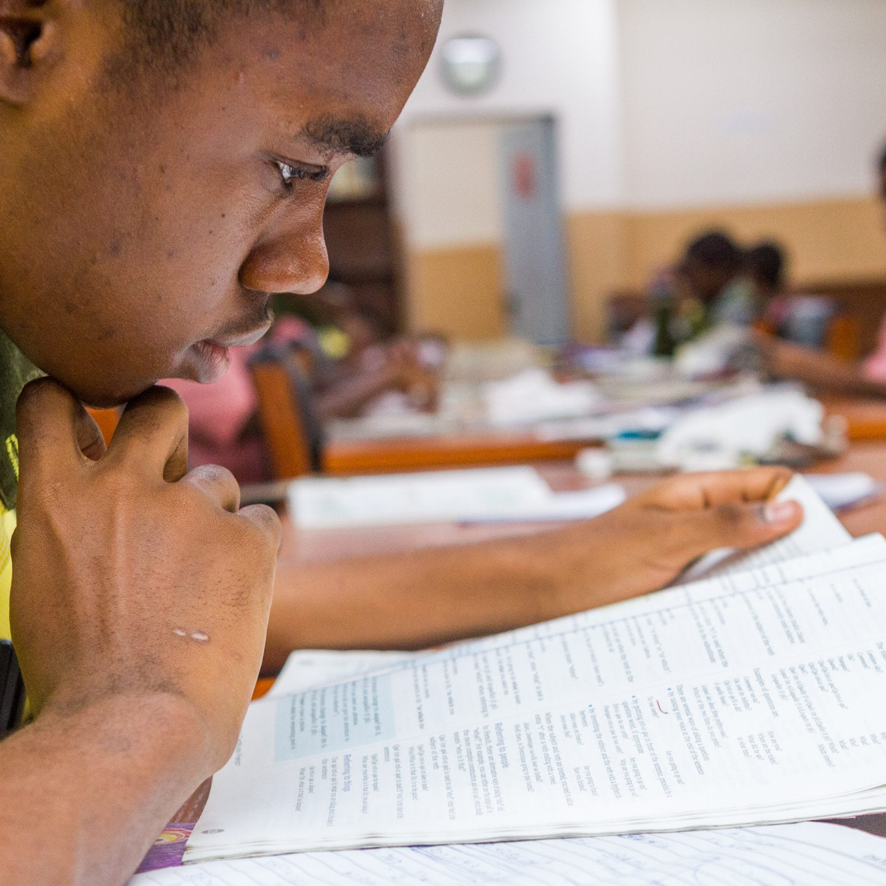

About
Academics

Like all Secondary School in Nigeria,
Jesuit Memorial College(JMC) strives to implement the
Basic School and Senior Secondary School curricular
developed by the Nigeria Educational Research and
development Council (NERDC). JMC runs three years
of Basic School (Basic 7, 8 and 9 classes) and another
three years of Senior Secondary School (SS 1-3) as
specified on the National policy of Education.
JMC offers a wide variety of academic subjects
taught by dedicated and professional teaching faculty.
Continue in the ACADEMICS page